Luke 19:10 · Rom 10:9–10 · Redemption through grace by faith
Acts 1:8 · Acts 2:4 · Spiritual empowerment for Christian witness
Isa 53:4–5 · Jas 5:14–16 · Divine healing provided in the Atonement
1 Thess 4:16–17 · Titus 2:13 · The Blessed Hope of the Church